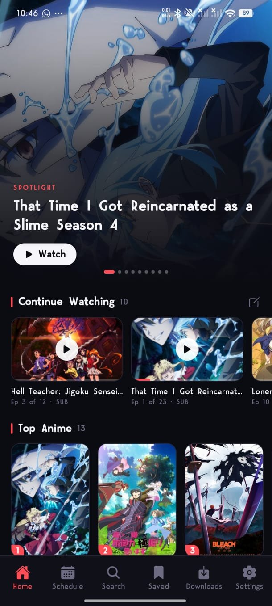
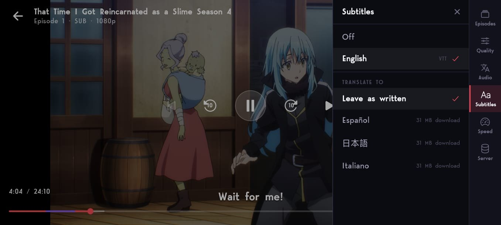
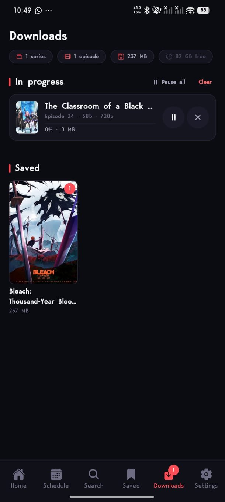
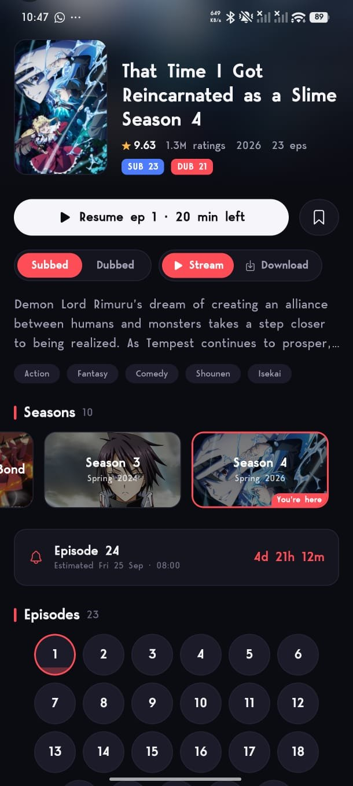
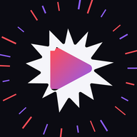

Tsuzuku
An anime app that picks up where you left off.
Watch it, download episodes for when you have no internet, and let MyAnimeList or AniList keep up with what you've seen.
Android · free · no account needed

At a glance
Everything it does, in one list.
No tiers, no upgrade, nothing held back for a paid version — all of this is in the app you download.
Watching
- Stream up to 1080p
- Change quality mid-episode
- Quality remembered for next time
- Sub and dub as separate lists
- Swap between them mid-episode
- Subtitle timing corrected for you
- Translate subtitles on the phone
- Double tap to skip, taps stack up
- Hold for double speed
- Slide for brightness and volume
- Skip the intro in one press
- Theatre mode
- Lock the orientation
- Set subtitle size, font and background
- Falls back when a server won't play
Offline
- Download any episode
- One file per episode
- Resumes after an interruption
- Keeps going when you leave the app
- Choose the quality to save at
- Share a saved episode like any video
- Offline watching still counts
- See what each download costs you
Finding things
- Continue watching, to the minute
- What's airing this week
- Countdown to the next episode
- Search by name
- Browse by genre
- Synopsis, cast, year and rating
- Every season in order
- Episode discussion threads
Your list
- MyAnimeList sync
- AniList sync
- Episodes ticked off as you watch
- Status, score and rewatches
- Start and finish dates
- Import your whole list
- Matching runs in the background
- Fix anything it can't place by hand
The app itself
- Free
- No account required
- No ads
- Updates arrive on their own
- Choose your own colours
- True black for OLED screens
Nothing in between
Tsuzuku goes straight to the site it streams from, from your phone. There is nothing of ours in the middle that can go down and take the app with it.
No account needed
Open it and watch. Connect MyAnimeList or AniList only if you want your list to follow you — and nothing already on your phone is replaced when you do.
It fixes itself
When something breaks on the site Tsuzuku streams from, the fix arrives on its own the next time you open the app. Nothing to reinstall, nobody to wait on.

Watching
Built by someone tired of tapping the wrong thing in the dark.
Pick the quality yourself
Every quality an episode actually comes in, changeable halfway through without losing your place, and remembered for the next episode. Tsuzuku checks what's really on offer instead of showing the same list every time — one series has 1080p, 720p and 360p, the next only has 720p.
Taps that add up
Double tap either side to skip, and tapping again keeps adding to the same jump instead of starting a new one. Hold anywhere for double speed. Slide up and down on the left for brightness, on the right for volume. +85s gets you past the cold open and the opening in one press.
Brightness it gives back
Tsuzuku dims its own screen instead of changing your phone's, so it never has to ask permission, and your phone is back to normal the moment you leave.
Sub and dub, side by side
Two separate episode lists rather than a number beside the title, and you can swap over halfway through an episode.
Subtitles that stay in time
Sometimes a dub's subtitles were written for a different copy of the episode and slide out of time partway in. Tsuzuku works out how far off they are and puts them back where they belong.
Translate subtitles on your phone
Get a language once and subtitles are translated on the phone itself — nothing is sent anywhere. Settings tells you how big each language is before you download it.
If one server won't play, it tries the next
Episodes are usually on more than one server. Tsuzuku works its way down the list rather than giving up on the first one that refuses.

Offline
On the train, on a plane, anywhere with no internet.
One episode, one file
An episode online is really hundreds of little pieces. Tsuzuku joins them into a single video as it downloads, so what ends up on your phone is one file the size of the episode — and you can send it on like any other video.
It keeps going when you leave
Switching away from the app doesn't quietly stop a download. If one does get interrupted it carries on from where it stopped rather than starting again.
Save at the size you want
Choose the quality to save at and every download takes the best one available up to that, whatever that particular episode happens to offer.
What you watch offline still counts
A downloaded episode plays on the same screen a streamed one does, so an episode you watch on a plane is in Continue Watching — and on your list — as soon as you're back online.

Your list
It keeps your list up to date without you opening it.
Connect MyAnimeList or AniList and finishing an episode here finishes it there. How far you've got, whether you're watching or on hold, your score, your rewatches and the dates you started and finished — all of it goes up as you watch.
MyAnimeList
- Every episode you finish is ticked off
- Your score, your status and your rewatches stay matched
- The discussion thread for each episode, right on the series page
- It won't call a series that's still airing finished, just because you've caught up
AniList
- The same, the moment you finish an episode
- Your whole list comes across in one go
- The description, cast and discussion come from the site you signed in to
- A rewatch you're in the middle of stays a rewatch

Tsuzuku
Sign in to bring your list with you, and to keep what you watch here in step with it.
An account can be connected later in Settings.
The first screen, recreated
Bringing a list across
Three hundred series, and you don't sit there watching it happen.
You don't wait for it
Tsuzuku takes your list and lets you get on with things, then looks each series up in the background — what you're watching first, then on hold, then plan to watch, and what you finished years ago last. They turn up as they're found, and closing the app only pauses it.
Nothing of yours is replaced
Signing in joins your list to what's already on the phone. Everything you've watched here stays exactly where it was.
The ones it can't find
Anything it can't match gets a screen of its own, so you can point it at the right series in a couple of taps instead of wondering where it went.
One list at a time
Signing in to the second signs you out of the first, on purpose — when two lists disagree there's no right answer.
And the rest of it
The parts you'd only notice if they were missing.
Continue watching
Opens on what you're partway through, at the episode and the minute you stopped.
Know what's next
What's airing this week, and when the next episode of anything you follow is due.
Search and genres
Find it by name or browse by genre, with the description, cast and year on a proper series page.
Episode lists open where you are
The episode numbers start where you're watching, not back at 1–24 when you're on 1,177.
Episode discussion
The thread for the episode you just finished, from whichever list you signed in to.
Theatre mode
Fill the whole screen or keep the page around the player, and lock it to portrait, landscape, or let it turn.
Make it your colours
Start from a preset or choose the colours yourself. Change the background and everything else follows it, and there's a pure black one for OLED screens.
Subtitles the size you want
Text size, background and font, set once and used on every episode after that.
It tells you what changed
When an update arrives, a short note says what's new in it — once, and then never again.
Get it
Put it on your phone, then tell us what's broken.
Tsuzuku is made with a small group of people who actually watch on it. New versions go up in the Discord first, it's where the bugs get found, and it's where what to build next gets argued about. Come and take a side.
- Before you install
- Works on Android phones from the last decade or so. Take the first download; if Android refuses to install it, your phone is 32-bit and the universal one is the same app built to run on it. It installs from the file rather than an app store, so Android will ask you once whether you trust it. Test versions install as a separate app with their own downloads and list, so trying one never costs you the version you already have.